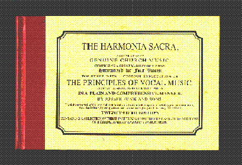

|  |
The Harmonia Sacra, A Compilation of Genuine Church Music: Comprising a Great Variety of Metres, Harmonized for Four Voice: Together with a Copious Explication of the Principles of Vocal Music. Exemplified and Illustrated with Tables, in a Plain and Comprehensive Manner, by Joseph Funk and Sons. 25thed. Intercourse Pennsylvania: Good Books, 1993
ISBN 1-56148-104-1
Available from:
Good Books
3510 Old Philadelphia Pk.
P.O. Box 419
Intercourse, PA 17534-0419
tel: (800) 762-7171
Price: $19.95
(or catch James at a singing and get a copy for $12.00)
Mary Oyer's Introduction to the Harmonia Sacra
Harmonia Sacra singing schedule
Minutes of Harmonia Sacra Singings
Address by Warren Steel at Singers Glen
For information on content, authors, and composers, see The Harmonia Sacra Handbook